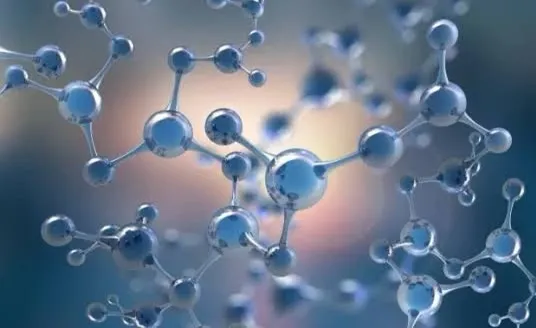

An Organic Material is one that is composed wholly, or mainly, of carbon compounds.
It is convenint to classify plastics into two general categories :

Thermoplastic can be softened and re-softened indefinitely by the application of heat and pressure,
as long as the heat does not cause damage
Thermoplastic don't melt, but flow at a suitable temperature and pressure
Thay are paricularly suitable for injection moulding and extrusion ,behave like glass when blown
and can be formed into bottle-and dome-like shaped by pressure and vaccum technique